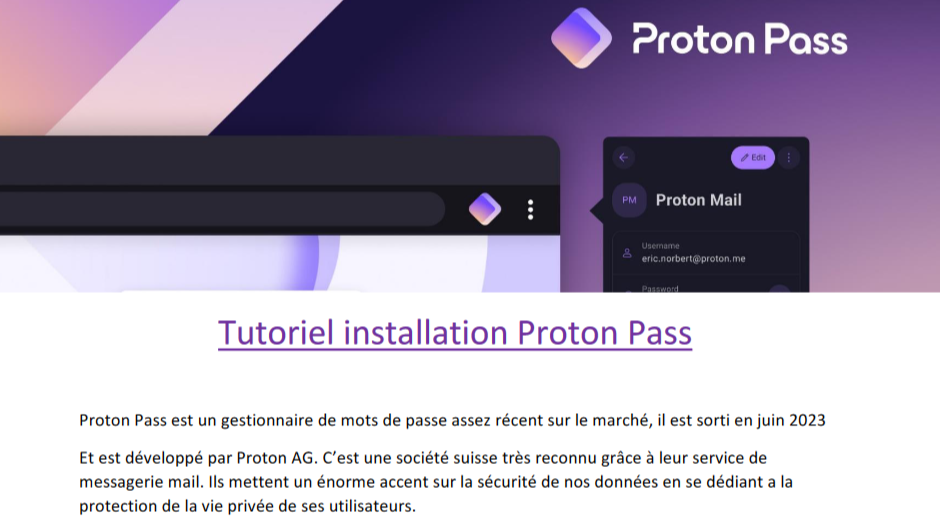
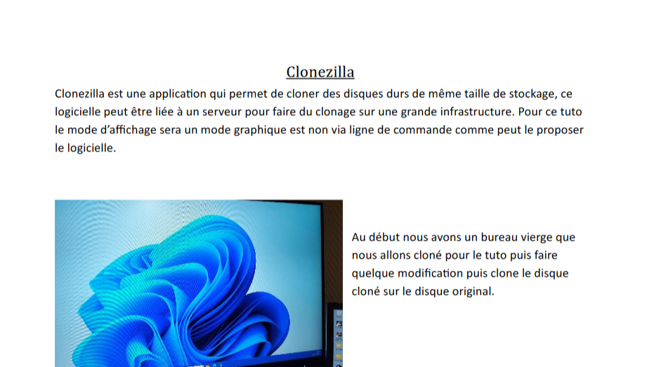

Dans ce projet, nous avons pour mission de configurer une clé USB multi-bootable avec plusieurs outils nécessaire pour la maintenance d'un ordinateur. (Le fait qu'une clé USB soit multi-bootable signifie que la clé peut booter sur plusieurs OS.) Nous devions aussi faire un comparatif entre plusieurs gestionnaires de mots de passe. (Un gestionnaire de mots de passe est un logiciel qui permet de gérer les mots de passe d'un utilisateur.)
A l’issu de ce projet nous avons rendu :
Nous sommes passe a l'oral avec mon binome afin de presenter le gestionnaires de mots de passe que nous avions choisi, a savoir Proton Pass. Nous avons aussi présenté la clef bootable, en faisant une demonstration des services de clonage et d'antivirus
J'ai vraiment apprécié ce projet. C'était une occasion pour moi d'apporter mes connaissances personnelles et de travailler en collaboration avec mon binôme. Nous avons pris la répartition des tâches et les choix de solutions très au sérieux.
|  |  |